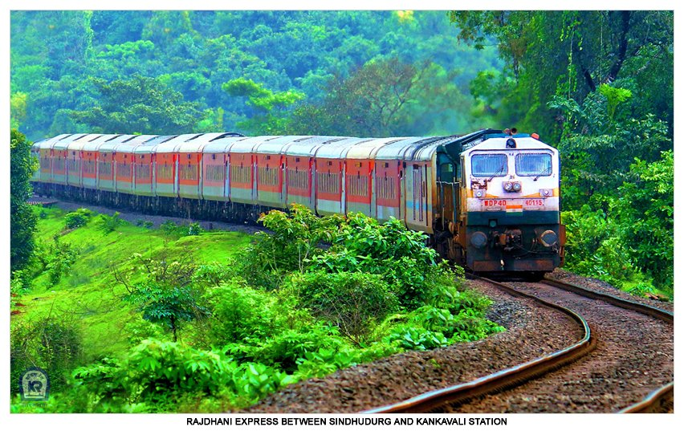
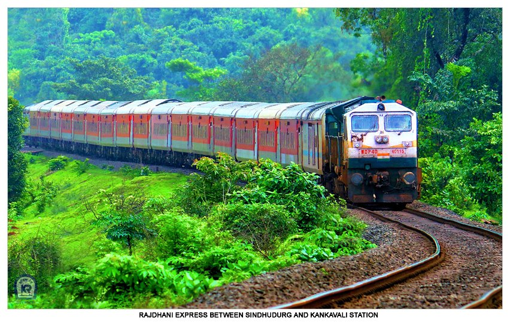
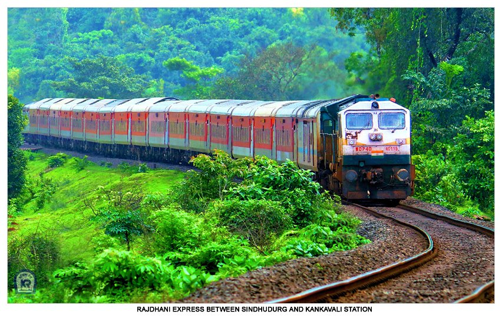

Konkan is well known for its natural beauty and is fast emerging as a favorite tourist destination for tourists. Konkan's beautiful virgin beachesand lush green valleys will definitely provide a rich and pleasant experience for the traveler.
This region is a naturally gifted area of the state. The people are literate and generally well off. They are a generally peace loving people who are helpful and friendly towards Tourists. They depend mainly upon fishing and farming for their livelihood and nowadays some are making their living with the help of growing Tourism in the area. The areas of Devgad, Dapoli and Ratnagiri are famous for its Alphonso mangoes and also a lot of fish are exported from Ratnagiri port.
The Konkan Railway is a railway operated by the Konkan Railway Corporation, with its headquarters at CBD Belapur in Navi Mumbai, Maharashtra, India. The first passenger train ran on Konkan railway tracks on 20 March 1993, between Udupi and Mangalore

Konkan cuisine is strong in spice, red chillie powder, corianders, and prepared with coconut oil. It is prepared using a deep purple berry that has a pleasing sweet and sour taste, kokum and raw mango as souring agents along with tamarind and lime.